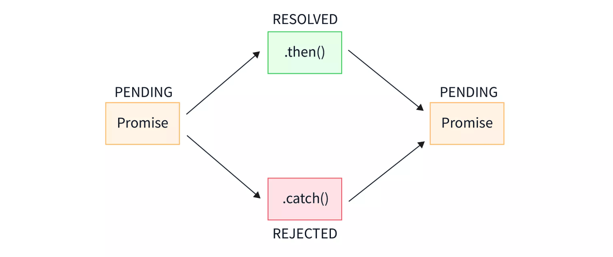

JavaScript Promise
この章の内容を学ぶ前に、非同期プログラミングとは何かを理解しておく必要があります。参考:JavaScript 非同期プログラミング
Promise は ECMAScript 6 で提供されたクラスで、複雑な非同期タスクをよりエレガントに記述することを目的としています。
Promise は JavaScript で非同期操作を処理するためのオブジェクトであり、非同期操作の最終的な完了（または失敗）とその結果値を表します。
簡単に言うと、Promise は「約束」であり、将来のある時点で結果（成功の結果かもしれないし、失敗の理由かもしれない）を返すことを表します。
Promise には3つの状態があります：
- pending：初期状態。成功でも失敗でもない状態
- fulfilled：操作が正常に完了したことを意味します
- rejected：操作が失敗したことを意味します

例
// 异步操作代码
if (/* 操作成功 */) {
resolve('成功的结果'); // 将 Promise 状态改为 fulfilled
} else {
reject('失败的原因'); // 将 Promise 状态改为 rejected
}
});
ブラウザサポート
Promise は ES6 で新しく追加されたため、一部の古いブラウザはサポートしていません。Apple の Safari 10 と Windows の Edge 14 以降のブラウザで ES6 機能をサポートし始めました。
以下は Promise のブラウザサポート状況です：
| Chrome 58 | Edge 14 | Firefox 54 | Safari 10 | Opera 55 |
Promise の使用方法
then() メソッド
then()このメソッドは、Promise の状態が fulfilled または rejected に変わったときのコールバック関数を指定するために使用します。
例
(result) => {
// 处理成功情况
console.log('成功:', result);
},
(error) => {
// 处理失败情况
console.error('失败:', error);
}
);
catch() メソッド
catch()このメソッドは、Promise が拒否された場合を処理することに特化しています。
例
.then((result) => {
console.log('成功:', result);
})
.catch((error) => {
console.error('失败:', error);
});
finally() メソッド
finally()このメソッドは、Promise の最終的な状態に関係なく実行されます。
例
.then((result) => {
console.log('成功:', result);
})
.catch((error) => {
console.error('失败:', error);
})
.finally(() => {
console.log('操作完成');
});
Promise のチェーン呼び出し
Promise の強力な特徴の1つは、複数の非同期操作をチェーン呼び出しできることです。
例
.then((result) => doSecondThing(result))
.then((newResult) => doThirdThing(newResult))
.then((finalResult) => {
console.log('最终结果:', finalResult);
})
.catch((error) => {
console.error('链中某处出错:', error);
});
Promise の静的メソッド
Promise.all()
すべての Promise が完了するか、任意の Promise が失敗するまで待機します。
例
.then((results) => {
// results 是一个包含所有 Promise 结果的数组
console.log(results);
})
.catch((error) => {
// 任一 Promise 失败就会进入这里
console.error(error);
});
Promise.race()
最初に完了した（成功か失敗かを問わず）Promise の結果を返します。
例
.then((result) => {
// 使用最先完成的 Promise 的结果
console.log(result);
})
.catch((error) => {
// 如果最先完成的 Promise 是失败的
console.error(error);
});
Promise.resolve() と Promise.reject()
解決済みまたは拒否済みの Promise をすばやく作成します。
例
const rejectedPromise = Promise.reject('立即拒绝的原因');
実際の応用例
例 1: Promise を使用した AJAX リクエストの処理
例
return new Promise((resolve, reject) => {
const xhr = new XMLHttpRequest();
xhr.open('GET', url);
xhr.onload = () => {
if (xhr.status === 200) {
resolve(xhr.response);
} else {
reject(new Error(xhr.statusText));
}
};
xhr.onerror = () => reject(new Error('网络错误'));
xhr.send();
});
}
fetchData('https://api.example.com/data')
.then((data) => {
console.log('获取数据成功:', data);
})
.catch((error) => {
console.error('获取数据失败:', error);
});
例 2: Promise チェーンを使用した複数の非同期操作の処理
例
return fetch(`/users/${userId}`);
}
function getPosts(userId) {
return fetch(`/users/${userId}/posts`);
}
getUser(123)
.then((user) => {
console.log('获取用户信息:', user);
return getPosts(user.id);
})
.then((posts) => {
console.log('获取用户帖子:', posts);
})
.catch((error) => {
console.error('操作失败:', error);
});
よくある質問とベストプラクティス
1. Promise のネストを避ける
間違ったやり方（コールバック地獄の Promise 版）：
例
doSecondThing(firstResult).then((secondResult) => {
doThirdThing(secondResult).then((thirdResult) => {
console.log(thirdResult);
});
});
});
正しいやり方（チェーン呼び出しを使用）：
例
.then(doSecondThing)
.then(doThirdThing)
.then((finalResult) => {
console.log(finalResult);
});
2. 拒否（reject）を常に処理する
Promise の拒否を処理し忘れると、「未捕捉の Promise 拒否」エラーが発生します。常に使用し、.catch() 或 try/catch（async/await では）エラーを処理してください。
3. Promise はキャンセルできない
Promise は一度作成するとキャンセルできません。キャンセル機能が必要な場合は、AbortController や他のパターンの使用を検討できます。
4. よくある質問（FAQ）に答える
Q: then、catch、finally の順序は入れ替えられますか？
A: できます。効果はまったく同じです。ただし、お勧めしません。then-catch-finally の順序でプログラムを書くのが最善です。
Q: then ブロック以外の2つのブロックは複数回使用できますか？
A: できます。finally は then と同じように順番に実行されますが、catch ブロックは、catch ブロック内で例外が発生しない限り、最初の1つだけが実行されます。そのため、catch と finally ブロックはそれぞれ1つだけ配置するのが最善です。
Q: then ブロックを中断するにはどうすればよいですか？
A: then ブロックはデフォルトで下へ順に実行されます。return では中断できません。throw を使用して catch にジャンプすることで中断できます。
Q: 従来のコールバック関数ではなく Promise を使うべきなのはどのような場合ですか？
A: 複数の非同期操作を順番に実行する必要がある場合です。例えば、非同期メソッドでユーザー名とパスワードを順番に検証したい場合、まず非同期でユーザー名を検証し、次に非同期でパスワードを検証する必要があるケースは Promise に適しています。
Q: Promise は非同期を同期に変換する方法ですか？
A: まったく違います。Promise は単により良いプログラミングスタイルにすぎません。
Q: 現在の then で続けて書くのではなく、もう1つ then を書く必要があるのはどのような場合ですか？
A: 再び非同期タスクを呼び出す必要があるときです。
Promise と async/await
ES2017 で async/await が導入されました。これは Promise に基づいており、非同期操作を処理するためのより直感的な構文を提供します。
例
try {
const user = await getUser(123);
const posts = await getPosts(user.id);
console.log('用户帖子:', posts);
} catch (error) {
console.error('获取数据失败:', error);
}
}
async/await の方が読みやすいですが、Promise は async/await の基礎であるため、その基本概念を理解することが依然として重要です。
その他の拡張
龙
272***8261@qq.com
参考アドレス
非同期を学ぶ際、関数の中のresolve()あまり理解できず、後でネットで調べて、その役割が分かりました：
Promise オブジェクトは非同期操作を表し、3つの状態があります：Pending（進行中）、Resolved（完了、別名 Fulfilled）、Rejected（失敗）。
コールバック内のresolve(data)この promise を次のようにマークしますresolverd、そして次のステップに進みますthen((data)=>{//do something})、resolve のパラメータが then に渡したいデータです。
龙
272***8261@qq.com
参考アドレス
dev_Tim
503***610@qq.com
重要なポイント：
注意：catch は直近の then のコールバック関数だけをキャッチします。前の then の実行が成功しない結果は、後続の then の reject コールバック関数が実行します。後続の then コールバック関数がなければ、catch がキャッチして実行します。
自分で資料を調べた後、自分の理解に基づいて詳しい例を書きました。間違っていたら、ご指摘歓迎します：
var promise =new Promise(function(resolve,reject){ //To Do 要异步执行的事情，这个异步执行的事情有可能成功执行完毕，那么Promise将是fulfilled状态，如果执行失败则是rejected; //下面测试代码，人为设置为rejected状态; reject("将当前构建的Promise对象的状态由pending（进行中）设置为rejected（已拒绝）"); //当然此处也可以设置为fulfilled(已完成)状态 }) promise.then(//调用第一个then() success=>{ console.log("异步执行成功，状态为：fulfilled，成功后返回的结果是："+success); return(" 当前 success "); }, error=>{ console.log("异步执行失败，状态为rejected，失败后返回的结果是："+error); return(" 当前 error "); } ).then( //调用第二个then() 因为调用第一个then()方法返回的是一个新的promise对象，此对象的状态由上面的success或者error两个回调函数的执行情况决定的： //如果回调函数能正常执行完毕，则新的promise对象的状态为fulfilled，下面执行success2,如果回调函数无法正常执行，则promise状态为rejected;下面执行error2 success2=>{ console.log("第一个then的回调函数执行成功 成功返回结果："+success2); throw(" 当前 success2 ");//自定义异常抛出 }, error2=>{ console.log("第一个then的回调函数执行失败 失败返回结果："+error2); return(" 当前 error2 "); } ).catch(err=>{ //当success2或者error2执行报错时，catch会捕获异常; console.log("捕获异常："+err); }); //上述代码,打印如下: //异步执行失败，状态为rejected，失败后返回的结果是：将当前构建的Promise对象的状态由pending（进行中）设置为rejected（已拒绝） //第一个then的回调函数执行成功 成功返回结果： 当前 error //捕获异常： 当前 success2dev_Tim
503***610@qq.com